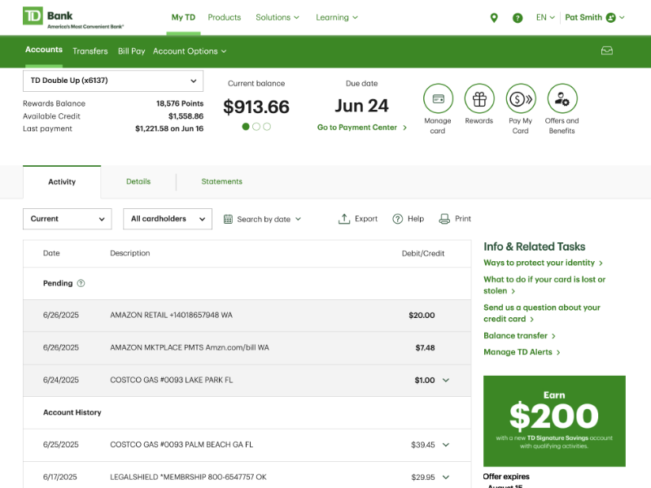
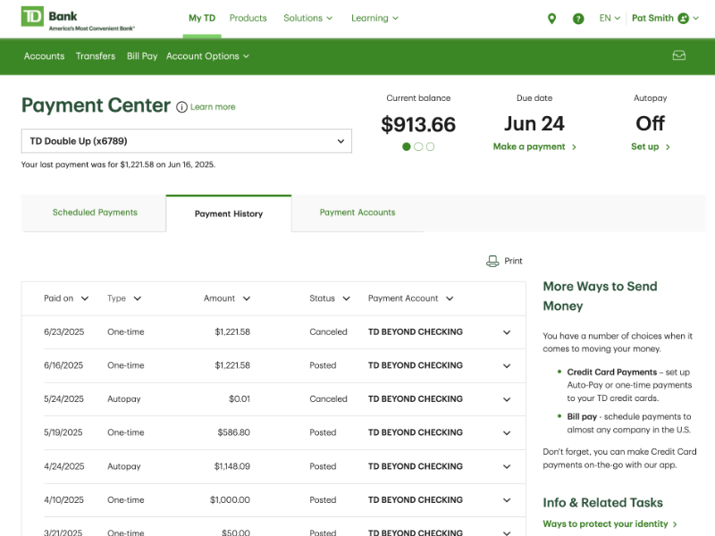
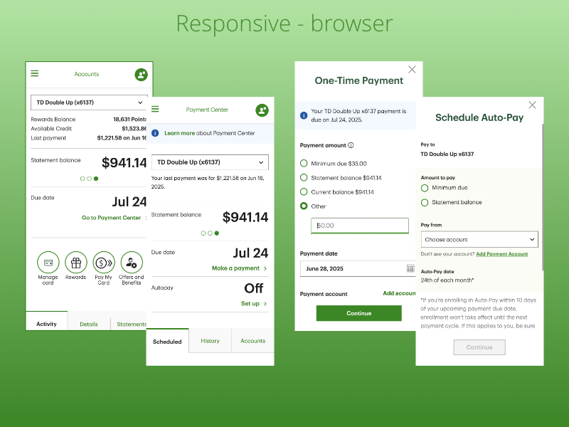
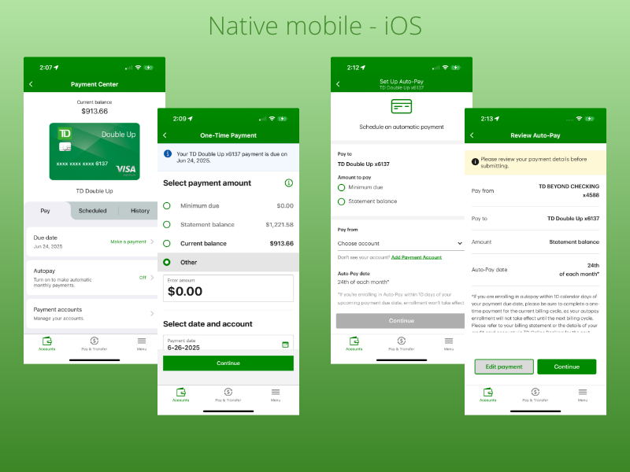

When I joined TD Bank, the only way a credit card holder could make a payment was by transferring money from a deposit account — no choice of statement balance vs. minimum due, no autopay, no scheduled future payments. Here's how that single, rigid flow became a full payment center, built to eventually serve every TD payment account, not just credit cards.
TD Bank, N.A. is an American national bank and the United States subsidiary of the Canadian multinational TD Bank Group.
Named Best Consumer Digital Bank in North America for the fourth consecutive year by Global Finance.
Winner of the BIG Innovation Award for the fourth year in a row.
The only way a TD credit card holder could make a payment was by transferring money from a deposit account to the credit card account. There was no way to choose statement balance vs. minimum amount due, no way to set up automatic payments, and no way to schedule a future one-time payment — functions competitors already had in place.
Understand user needs, motivations, behaviors, and pain points.
Reviewed existing credit card payment workflows, user journeys and stakeholder insights.
Ran a competitive analysis against payment experiences competitors already had live.
Analyzed existing customer feedback tied to the current transfer-only payment flow.
Created initial wireframe concepts of new payment workflows to react to.
Distill research findings into actionable insights.
Reviewed and created user personas grounded in the discovery findings.
Built empathy maps and user journey maps around the current payment flow.
Wrote clearly defined problem statements to align the team before ideation.
Develop potential solutions for the defined problems.
Sketched concepts and built out wireframes for the new payment flows.
Mapped user flows across payment type, amount and scheduling choices.
Developed the information architecture for a payment center built to scale beyond credit cards.
Ran collaboration sessions with product, engineering and other team members.
Convert ideas into interactive prototypes for internal concept validation.
Converted approved wireframe concepts into high-fidelity designs and clickable prototypes.
Collaborated with the UX Research team to define what to learn and what to test.
Ran usability studies to test and validate the new payment concepts.
Use the interactive prototype to validate designs with real credit card users and identify usability issues.
Tested the clickable prototype directly with real TD credit card users.
Used the resulting test data to identify gaps and issues early, and adjusted the design accordingly.
Hand off design assets to the developers building the feature for release.
Prepared design specs and assets using Figma Dev Mode.
Provided documentation to support and guide the development team through build.
Monitor performance after the product or feature goes live.
Analyzed post-launch user feedback and metrics such as adoption rate.
Ran a new usability study to validate the release and inform design-enhancement recommendations for the next iteration.
Desktop, responsive and native iOS views from the delivered payment experience.



